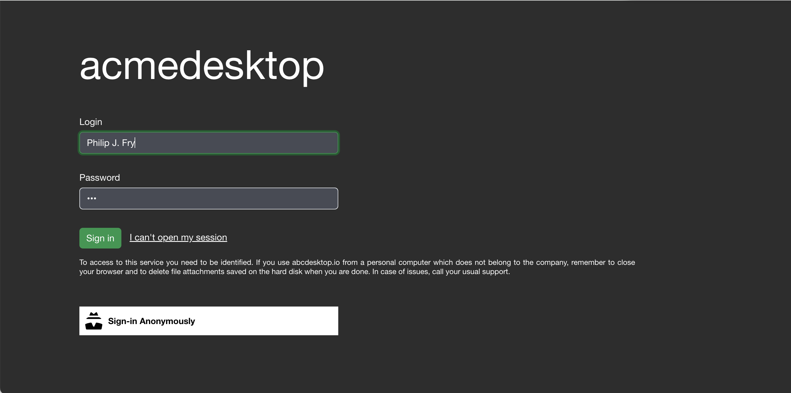

Update and custom frontend web page
abcdesktop uses a front HTML web site and X11 Linux application. So, to get a new graphic design, you have to define it twice in HTML (CSS) files and in X11 config.
Requirements
dockerpackage installed
Goals
- Update abcdesktop default frontend web page to use your own.
- Create new image for abcdesktop oc.nginx
Configure od.config to use the new color
In the od.config, add the env var ABCDESKTOP_BG_COLOR
desktop.envlocal : {
'X11LISTEN':'tcp',
'WEBSOCKIFY_HEARTBEAT':'30',
'TURN_PROTOCOL': 'tcp',
'ABCDESKTOP_BG_COLOR': #18974c }
Then update the config map abcdesktop-config and restart deployment pyos-od
kubectl create -n abcdesktop configmap abcdesktop-config --from-file=od.config -o yaml --dry-run=client | kubectl replace -n abcdesktop -f -
kubectl rollout restart deployment pyos-od -n abcdesktop
You should read on stdout
configmap/abcdesktop-config replaced
deployment.apps/pyos-od restarted
The new desktop is defined with the default background color

We need to change the top color with the same new default value #18974c

Update the oc.nginx container image to add #18974c inside the new graphic chart.
Create new image for abcdesktop oc.nginx
Clone default webmodules
BRANCH=3.4
git clone -b $BRANCH https://github.com/abcdesktopio/webModules.git
Locate project and ui files
Update ui.json file
Update your ui.json file. ui.json is located in transpile/config directory.
ls -la webModules/transpile/config
total 204
drwxr-xr-x 5 alexandredevely staff 160 Nov 29 14:54 .
drwxr-xr-x 11 alexandredevely staff 352 Nov 29 14:54 ..
-rw-r--r-- 1 alexandredevely staff 34 Nov 29 14:54 .cache.json
-rw-r--r-- 1 alexandredevely staff 1924 Nov 29 14:54 modules.json
-rw-r--r-- 1 alexandredevely staff 1548 Nov 29 14:54 ui.json
ui.json is a json dictionary file
The main entry is name, name is the project name:
| entry | default value | example |
|---|---|---|
| name | abcdesktop.io | acmedesktop.io |
{
"name": "abcdesktop.io",
"projectNameSplitedHTML": "<span id='projectNameSplitedStagea'>a</span><span id='projectNameSplitedStageb'>b</span><span id='projectNameSplitedStagec'>c</span><span id='p
rojectNameSplitedStaged'>desktop</span>",
"colors": [
{
"name": "@x11bgcolor",
"value": "#6EC6F0"
},
{
"name": "@primary",
"value": "#474B55"
},
{
"name": "@secondary",
"value": "#2D2D2D"
},
{
"name": "@tertiary",
"value": "#6EC6F0"
},
{
"name": "@quaternary",
"value": "#1E1E1E"
},
{
"name": "@svgColor",
"value": "#FFFFFF"
},
{
"name": "@danger",
"value": "#CD3C14"
},
{
"name": "@success",
"value": "#32C832"
},
{
"name": "@info",
"value": "#527EDB"
},
{
"name": "@warning",
"value": "#FFCC00"
},
{
"name": "@light",
"value": "#FFFFFF"
},
{
"name": "@dark",
"value": "#666666"
},
{
"name": "@blue",
"value": "#4BB4E6"
},
{
"name": "@green",
"value": "#50BE87"
},
{
"name": "@purple",
"value": "#A885D8"
},
{
"name": "@pink",
"value": "#FFB4E6"
},
{
"name": "@yellow",
"value": "#FFD200"
}
],
"urlcannotopensession": "/identification/site/",
"urlusermanual": "https://www.abcdesktop.io/",
"urlusersupport": "https://www.abcdesktop.io/",
"urlopensourceproject": "https://www.abcdesktop.io/"
}
Login progress
Login progress is embedded in span HTML tags.
Each projectNameSplitedStage describes a step during the user's authentification then pod's creation process.
- projectNameSplitedStagea:
step 1 - projectNameSplitedStageb:
step 2 - projectNameSplitedStagec:
step 3 - projectNameSplitedStaged:
step 4
<span id='projectNameSplitedStagea'>a</span>
<span id='projectNameSplitedStageb'>b</span>
<span id='projectNameSplitedStagec'>c</span>
<span id='projectNameSplitedStaged'>desktop</span>
Colors dictionary entries
| entry | default value | example |
|---|---|---|
| @primary | #474B55 | #474B55 |
| @secondatry | #2D2D2D | #2D2D2D |
| @tertiary | #6EC6F0 | #6EC6F0 |
Update the ui.json with your own values
Change for example the name abcdesktop to acmedesktop
"name": "acmedesktop.io"
Update the projectNameSplitedHTML values, the @tertiary and @x11bgcolor colors
{
"name": "@x11bgcolor",
"value": "#18974c"
},
{
"name": "@tertiary",
"value": "#18974c"
},
Example with new acmedesktop
{
"name": "acmedesktop.io",
"projectNameSplitedHTML": "<span id='projectNameSplitedStagea'>a</span><span id='projectNameSplitedStageb'>c</span><span id='projectNameSplitedStagec'>me</span><span id='projectNameSplitedStaged'>desktop</span>",
"colors": [
{
"name": "@x11bgcolor",
"value": "#18974c"
},
{
"name": "@primary",
"value": "#474B55"
},
{
"name": "@secondary",
"value": "#2D2D2D"
},
{
"name": "@tertiary",
"value": "#18974c"
},
{
"name": "@quaternary",
"value": "#1E1E1E"
},
{
"name": "@svgColor",
"value": "#FFFFFF"
},
{
"name": "@danger",
"value": "#CD3C14"
},
{
"name": "@success",
"value": "#32C832"
},
{
"name": "@info",
"value": "#527EDB"
},
{
"name": "@warning",
"value": "#FFCC00"
},
{
"name": "@light",
"value": "#FFFFFF"
},
{
"name": "@dark",
"value": "#666666"
},
{
"name": "@blue",
"value": "#4BB4E6"
},
{
"name": "@green",
"value": "#50BE87"
},
{
"name": "@purple",
"value": "#A885D8"
},
{
"name": "@pink",
"value": "#FFB4E6"
},
{
"name": "@yellow",
"value": "#FFD200"
}
],
"urlcannotopensession": "/identification/site/",
"urlusermanual": "https://www.abcdesktop.io/",
"urlusersupport": "https://www.abcdesktop.io/",
"urlopensourceproject": "https://www.abcdesktop.io/"
}
build your new image
Run the docker build command to build the new oc.nginx:acme image
The target image is abcdesktopio/oc.nginx:acme you should change it with your own for example myacme/oc.nginx:acme
docker build --build-arg NODE_MAJOR=20 --build-arg BASE_IMAGE=abcdesktopio/oc.nginx.builder --build-arg BASE_IMAGE_RELEASE=3.4 --build-arg TARGET=dev -t abcdesktopio/oc.nginx.acme:3.4 -f Dockerfile .
[+] Building 16.5s (19/19) FINISHED docker:default
=> [internal] load build definition from Dockerfile 0.0s
=> => transferring dockerfile: 962B 0.0s
=> [internal] load metadata for docker.io/library/nginx:latest 0.0s
=> [internal] load metadata for docker.io/abcdesktopio/oc.nginx.builder:3.4 0.0s
=> [internal] load .dockerignore 0.0s
=> => transferring context: 2B 0.0s
=> CACHED [stage-1 1/2] FROM docker.io/library/nginx:latest 0.0s
=> CACHED [builder 1/11] FROM docker.io/abcdesktopio/oc.nginx.builder:3.4 0.0s
=> [internal] load build context 0.1s
=> => transferring context: 265.27kB 0.1s
=> [builder 2/11] RUN echo current branch is 0.2s
=> [builder 3/11] RUN echo NODE release is 20 0.2s
=> [builder 4/11] RUN echo current target is prod it can be 'dev' or 'prod' 0.2s
=> [builder 5/11] COPY . /var/webModules 0.4s
=> [builder 6/11] WORKDIR /var/webModules 0.1s
=> [builder 7/11] RUN make clean 0.7s
=> [builder 8/11] RUN make prod 9.7s
=> [builder 9/11] RUN ./mkversion.sh && cat version.json 0.2s
=> [builder 10/11] RUN /myenv/bin/html5validator index.html 2.0s
=> [builder 11/11] RUN make removebuildtools 0.8s
=> [stage-1 2/2] COPY --from=builder /var/webModules /usr/share/nginx/html 0.7s
=> exporting to image 0.7s
=> => exporting layers 0.7s
=> => writing image sha256:d7bdbc9f7fafe3282161551e84c5997bb12051bded6405190267863dd73a1698 0.0s
=> => naming to docker.io/abcdesktopio/oc.nginx.acme:3.4
update the abcdesktop.yaml
To update the abcdesktop.yaml to replace oc.nginx:3.4 by your own image oc.nginx.acme:3.4
- edit your own
abcdesktop.yamlfile
[...]
- name: nginx
imagePullPolicy: Always
image: abcdesktopio/oc.nginx:3.4
ports:
- containerPort: 80
name: http
[...]
Update the deployement with your new image name abcdesktopio/oc.nginx:acme
[...]
- name: nginx
imagePullPolicy: Always
image: abcdesktopio/oc.nginx.acme:3.4
ports:
- containerPort: 80
name: http
[...]
apply your abcdesktop.yaml file
kubectl apply -f abcdesktop.yaml
role.rbac.authorization.k8s.io/pyos-role unchanged
rolebinding.rbac.authorization.k8s.io/pyos-rbac unchanged
serviceaccount/pyos-serviceaccount unchanged
configmap/configmap-mongodb-scripts unchanged
secret/secret-mongodb configured
deployment.apps/mongodb-od configured
deployment.apps/memcached-od configured
deployment.apps/router-od configured
deployment.apps/nginx-od configured
deployment.apps/speedtest-od configured
deployment.apps/pyos-od configured
deployment.apps/console-od configured
deployment.apps/openldap-od configured
endpoints/desktop unchanged
service/desktop unchanged
service/memcached unchanged
service/mongodb unchanged
service/speedtest unchanged
service/pyos unchanged
service/console unchanged
service/http-router unchanged
service/website unchanged
service/openldap unchanged
Connect to your new website
Open your web browser to your abcdesktop website
- the acmedesktop login page

- the acmedesktop login process

acmedesktopcolors are updated

- the acmedesktop logout process